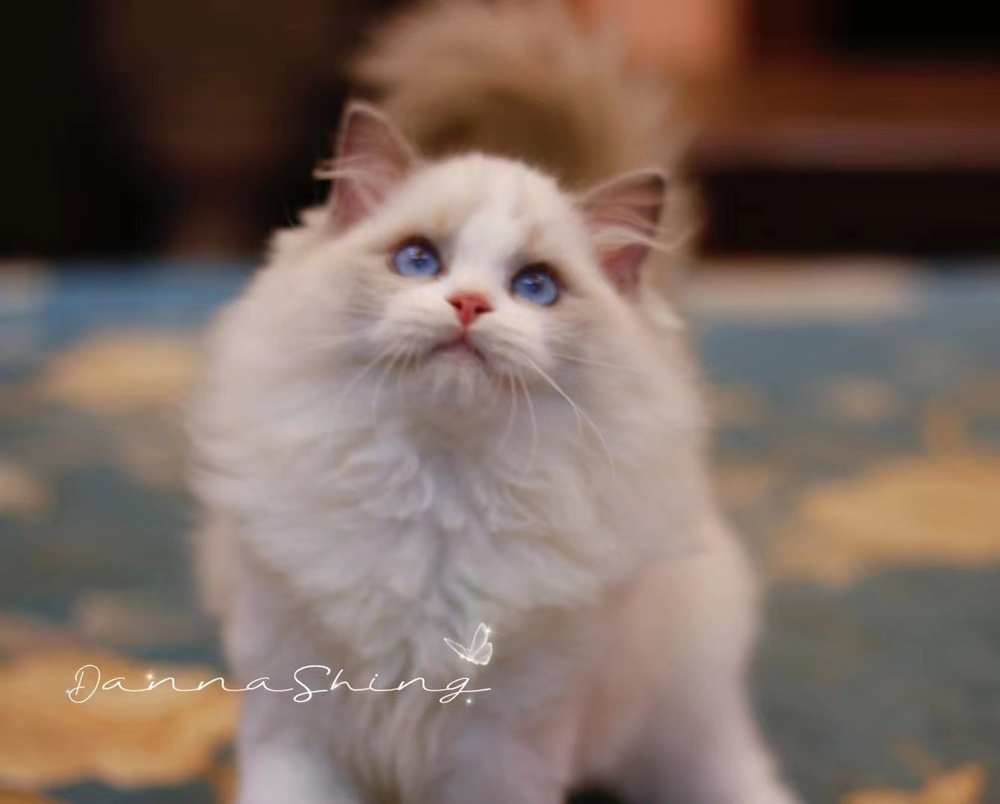

Kira Ragdoll
Welcome to our official website for our Ragdoll cattery in Hong Kong! We are dedicated to breeding and raising healthy and beautiful Ragdoll cats with affectionate personalities. Our cattery is a small family-run business, ensuring that each of our kittens receives individual attention and care. We take pride in the quality of our breeding program and strive to produce Ragdoll kittens that are true to the breed standard. Browse our website to learn more about our cattery, our Ragdoll cats, and available kittens. Thank you for considering our cattery for your future feline companion!